Disassembly
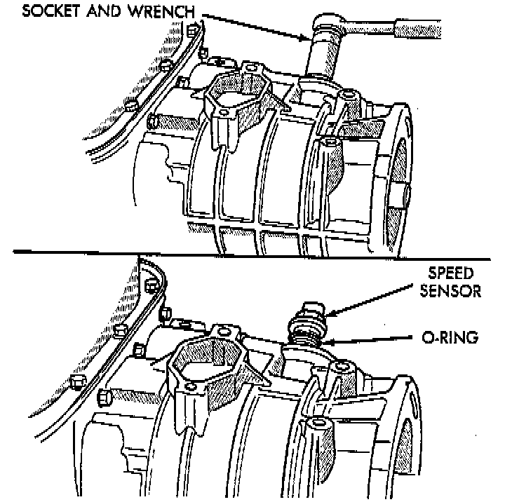
DISASSEMBLY
1. Remove transmission speed sensor and O-ring seal from overdrive case.
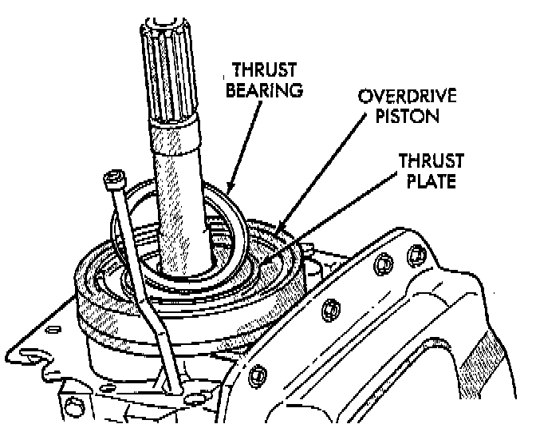
2. Remove overdrive piston thrust bearing.
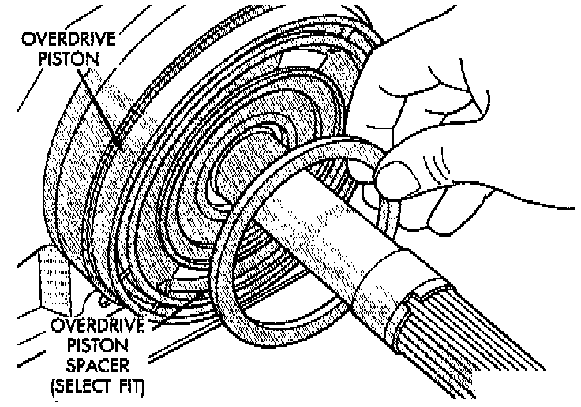
OVERDRIVE PISTON DISASSEMBLY
1. Remove overdrive piston thrust plate. Retain thrust plate. It is a select fit part and may possibly be reused.
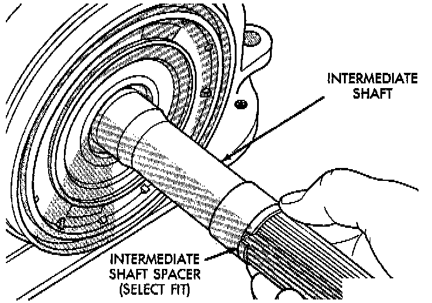
2. Remove intermediate shaft spacer. Retain spacer. It is a select fit part and may possibly be reused.
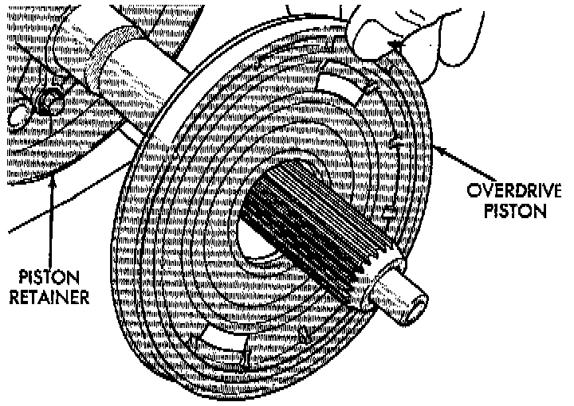
3. Remove overdrive piston from retainer.
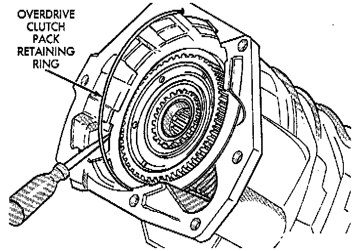
OVERDRIVE CLUTCH PACK DISASSEMBLY
1. Remove overdrive clutch pack wire retaining ring.
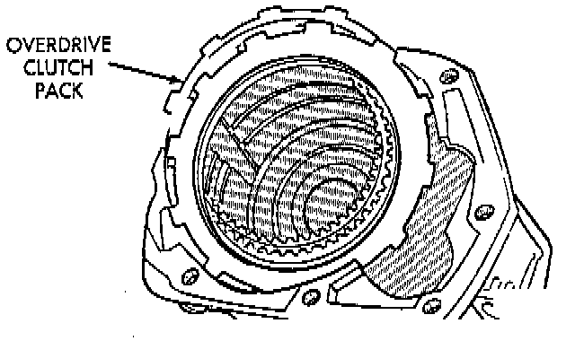
2. Remove overdrive clutch pack.
NOTE: The 42RE transmission has three clutch discs and two clutch plates.
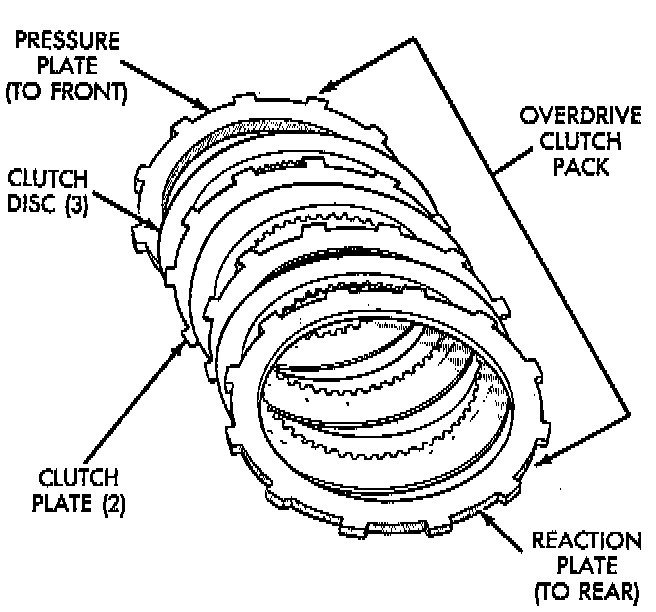
3. Note position of clutch pack components for assembly reference.
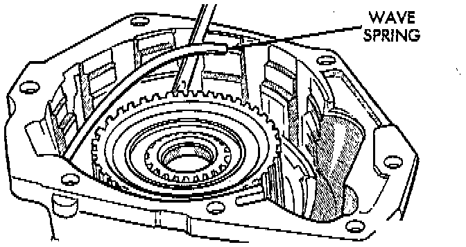
OVERDRIVE GEAR-TRAIN DISASSEMBLY
1. Remove overdrive clutch wave spring.
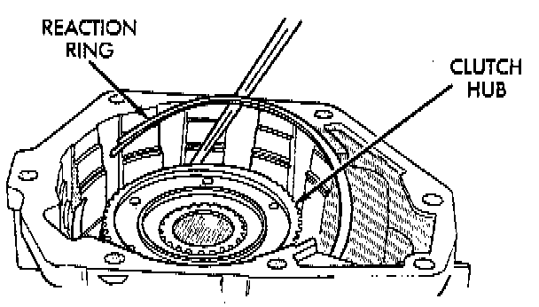
2. Remove overdrive clutch reaction snap ring. Note that snap ring is located in same groove as wave spring.
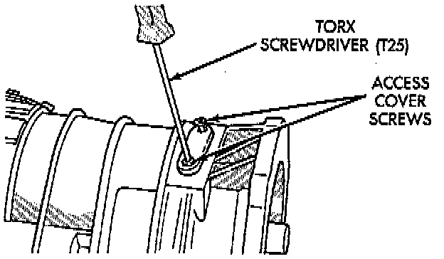
3. Remove Torx head screws that attach access cover and gasket to overdrive case.
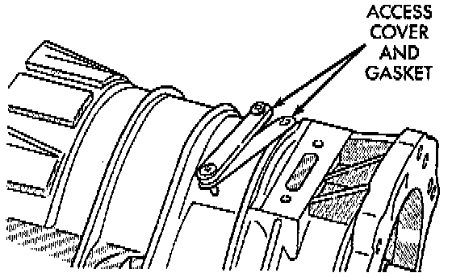
4. Remove access cover and gasket.
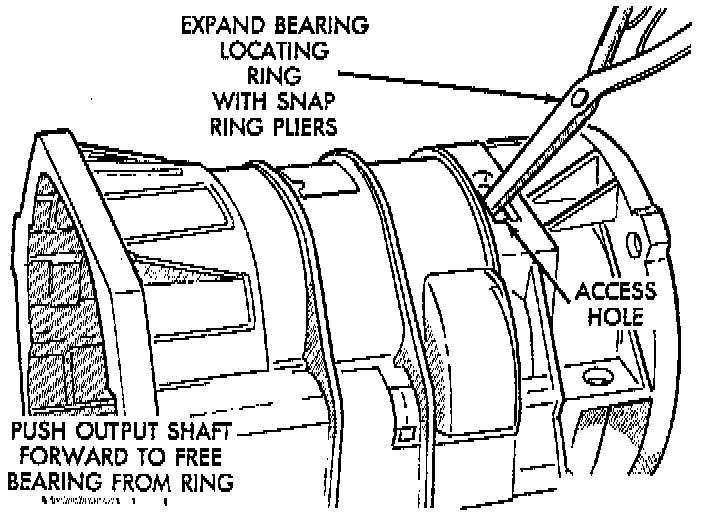
5. Expand output shaft bearing snap ring with expanding-type snap ring pliers. Then push output shaft forward to release shaft bearing from locating ring.
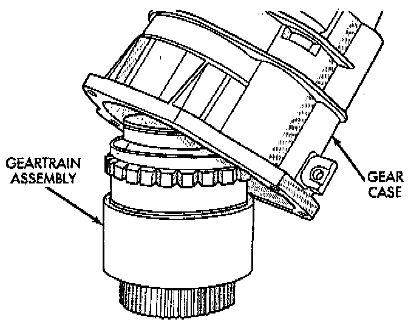
6. Lift gear case up and off gear-train assembly.
7. Remove snap ring that retains rear bearing on output shaft.
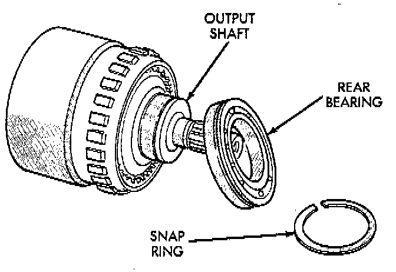
8. Remove rear bearing from output shaft.
WARNING: The next step in disassembly involves compressing the direct clutch spring. It is extremely important that proper equipment be used to compress the spring as spring force is approximately 830 pounds. Use spring compressor tool 6227-1, or equivalent and a hydraulic shop press with a minimum ram travel of 5 - 6 inches. The press must also have a bed that can be adjusted up or down as required. Release clutch spring tension slowly and completely to avoid personal injury.
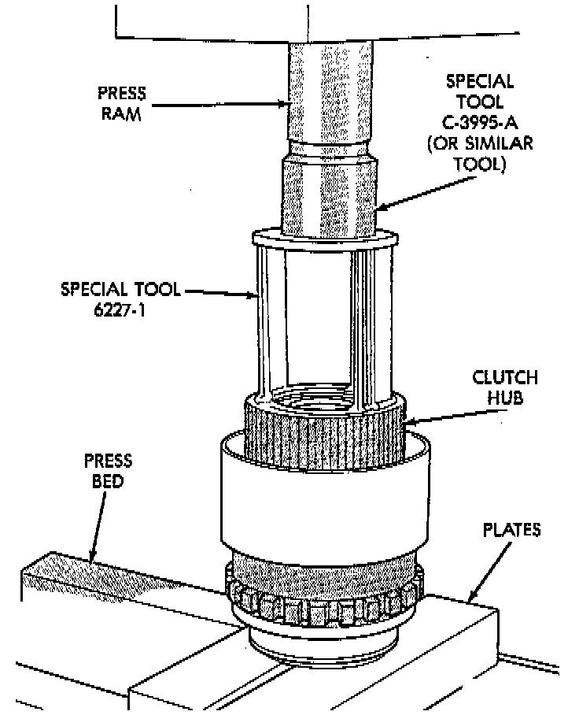
DIRECT CLUTCH, HUB AND SPRING DISASSEMBLY
1. Mount gear-train assembly in shop press.
2. Position Compressor Tool 6227-1, or equivalent on clutch hub. Support output shaft flange with steel press plates as shown and center assembly under press ram.
3. Apply press pressure slowly. Compress hub and spring far enough to expose clutch hub retaining ring and relieve spring pressure on clutch pack snap ring.
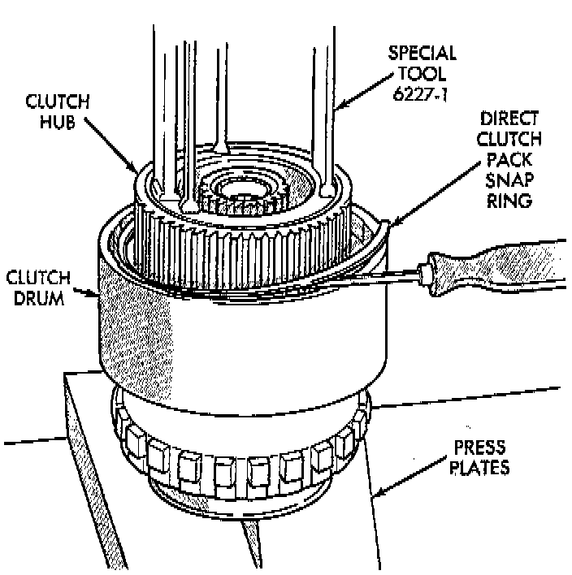
4. Remove direct clutch pack snap ring.
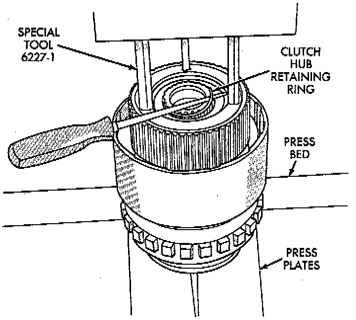
5. Remove direct clutch hub retaining ring.
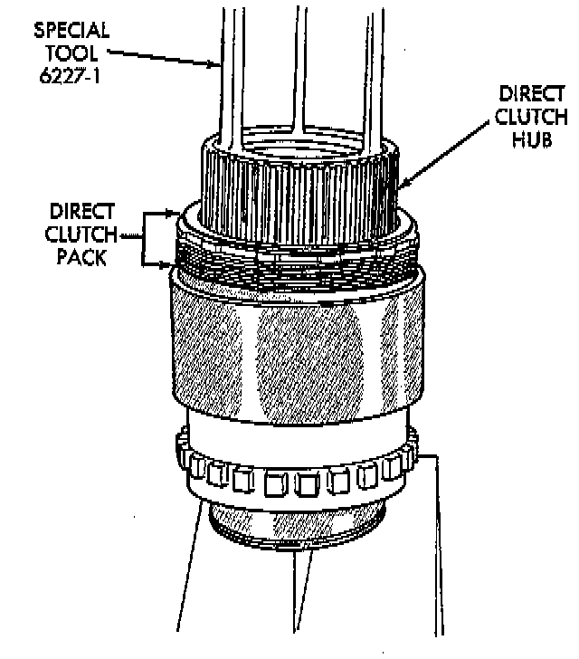
6. Release press load slowly and completely.
7. Remove Special Tool 6227-1, or equivalent. Then remove clutch pack from hub.
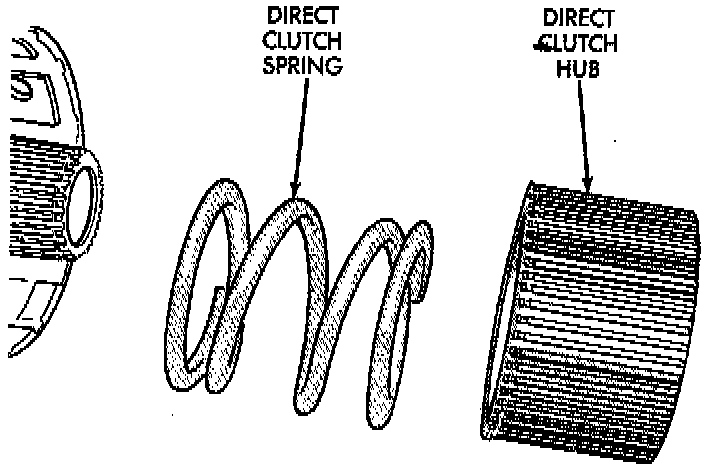
GEAR-TRAIN DISASSEMBLY
1. Remove direct clutch hub and spring.
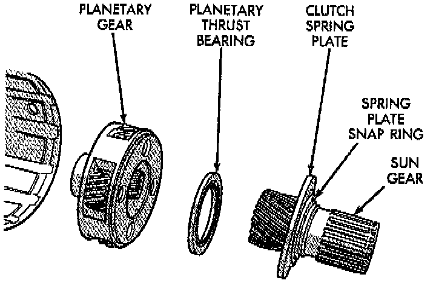
2. Remove sun gear and spring plate. Then remove planetary thrust bearing and planetary gear.
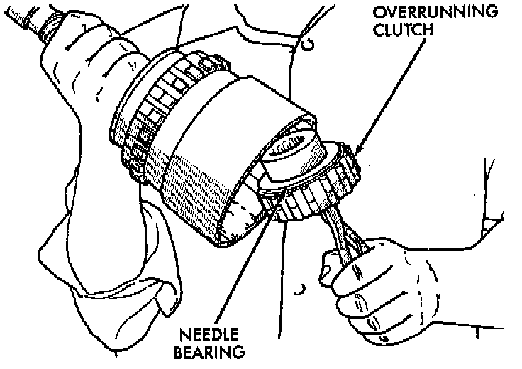
3. Remove overrunning clutch assembly with expanding type snap ring pliers. Insert pliers into clutch hub. Expand pliers to grip hub splines and remove clutch with counterclockwise, twisting motion.
4. Remove thrust bearing from overrunning clutch hub.
5. Remove overrunning clutch from hub.
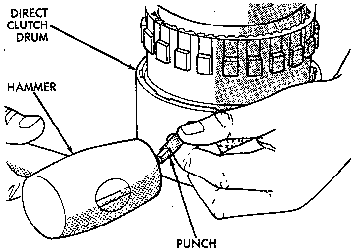
6. Mark position of annulus gear and direct clutch drum for assembly alignment reference. Use small center punch or scriber to make alignment marks.
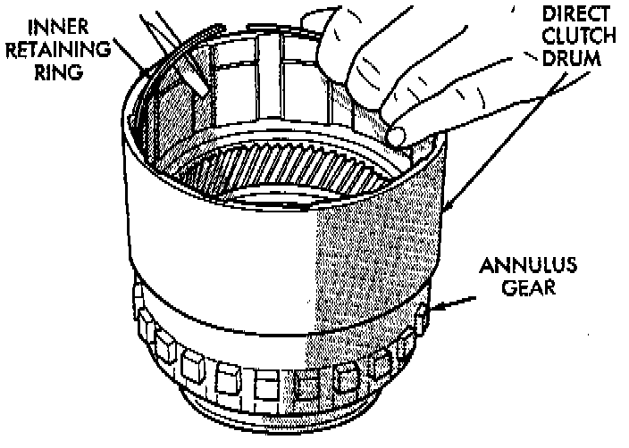
7. Remove direct clutch drum rear retaining ring.
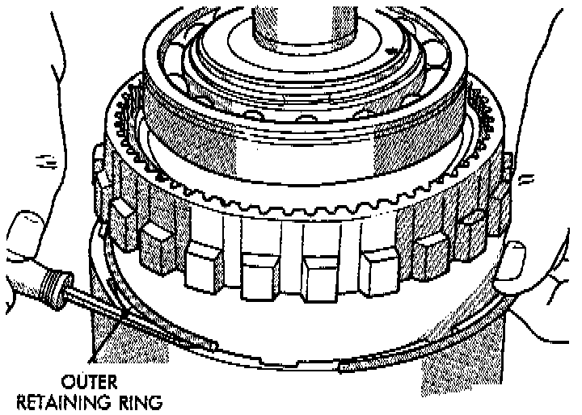
8. Remove direct clutch drum outer retaining ring.
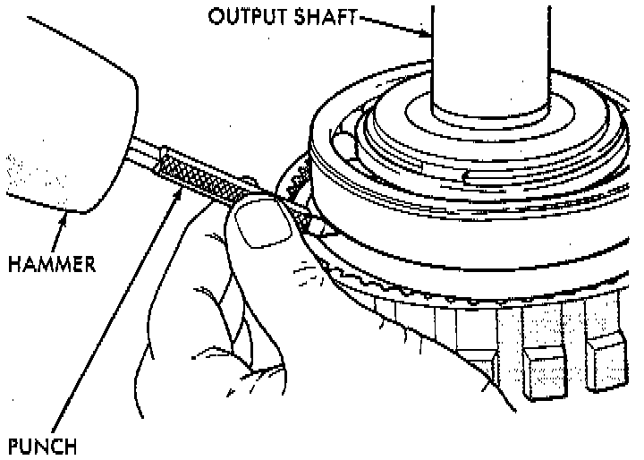
9. Mark annulus gear and output shaft for assembly alignment reference. Use punch or scriber to mark gear and shaft.
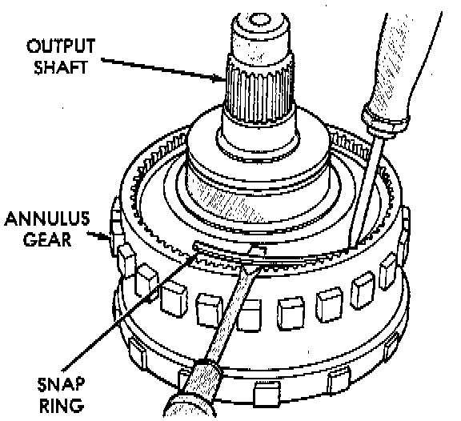
10. Remove snap ring that secures annulus gear on output shaft. Use two screwdrivers to unseat and work snap ring out of groove as shown.
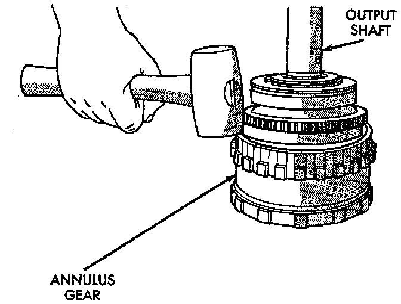
11. Remove annulus gear from output shaft. Use rawhide or plastic mallet to tap gear off shaft.
GEAR CASE AND PARK LOCK DISASSEMBLY
1. Remove locating ring from gear case.
2. Remove park pawl shaft retaining bolt and remove shaft, pawl and spring.
3. Remove reaction plug snap ring and remove reaction plug.
4. Remove output shaft seal.